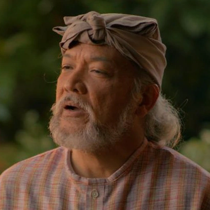
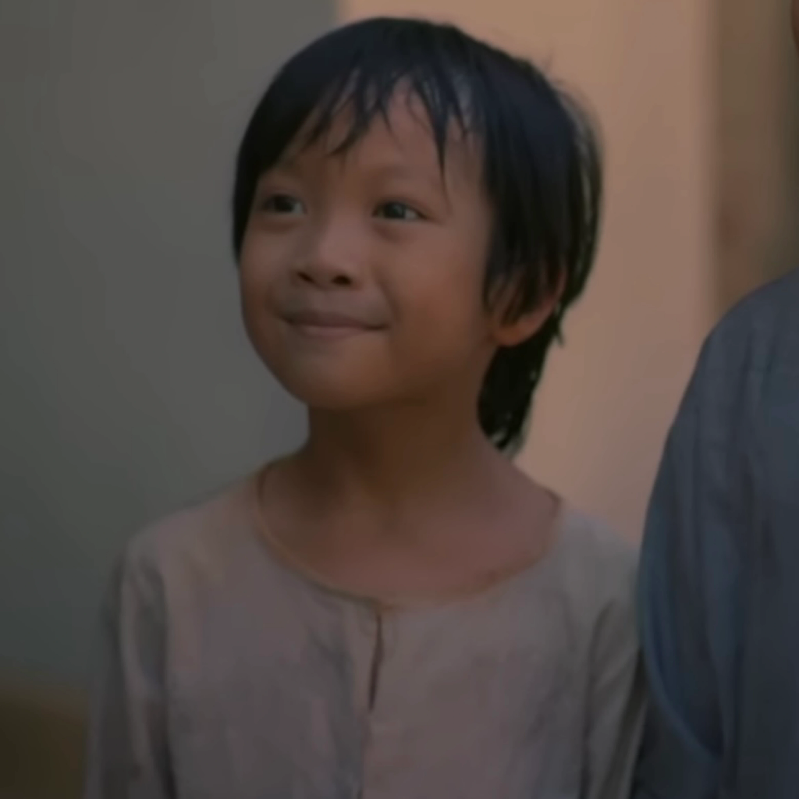

| CHARACTERS IN NOLI ME TANGERE |
|
Juan Crisostomo Ibarra Y Magsalin (Ibarra) |
- A rich young man
- Studies in Europe for 7 years
- Son of Don Rafael
- His hometown is in San Diego
- Lover of Maria Clara
|
 |
María Clara de los Santos y Alba |
- Mestiza
- A sweet young girl
- Daughter of Kapitan Tiago
- Real Daughter of Padre Damaso
- Daughter of Donya Pia Alba
- lover of Crisostomo Ibarra
|
 |
Padre Damaso |
 |
Elias |
- Born to a wealthy family
- Became a fugitive
- Selfless man
- worked with the bandits
- aided those who are oppressed by society
|
 |
Santiago de los Santos |
|
Padre Salvi |
- Curate of San Diego
- Replaced Padre Damaso
- uses his power to control people
- In love with Maria Clara
- Spanish friar
|
 |
Don Rafael Ibarra |
- Married a member of the Magsalin family
- Father of Crisostomo Ibarra
- imprisoned
- Died inside the prison
|
|  |
Pilosopo Tasyo o Don Anastacio |
|
Sisa |
- Mother of Basilio and Crispin
- She went insane after her two sons went missing
- Her Husband is abusive
|
|  |
Crispin |
- A sacristan
- Son of Sisa
- Younger Brother of Basilio
- The sacristan mayor accused him of stealing
- Beaten up to death
|
 |
Basilio |
- A sacristan
- Son of Sisa
- Older brother of Crispin
- After the death of his mother, Kapitan Tiago took care of him
- He became a medical student when he grew up
|
|
Donya Victorina de Espadaña |
- Wife of Don Tiburcio
- Pretends to be a Spaniard
- Friend of Kapitan Tiago
- She was desperate for a husband in order to obtain her social status
|
 |
Don Tiburcio de Espadaña |
- Husband of Donya Victorina
- His wife claimed that he is doctor
- He checked on Maria Clara when she fell ill
- Socialite
|
 |
Donya Consolacion |
|
Alperes |
- Husband of Donya Consolation
- Leader of the civil guards
- Abusive to his soldiers
- Rival of Padre Salvi
|
 |
Tiya Isabel |
Tap on these references to get to know more about these chracters:Reference 1
Reference 2
Reference 3
All the images used:Tap here
Maria Clara At Ibarra Wiki. (n.d.). Retrieved September 26, 2023, from https://mariaclaraatibarra.fandom.com/wiki/Maria_Clara_At_Ibarra_Wik
Noli Me Tangere Wiki. (n.d.). Retrieved September 26, 2023, from https://noli-me-tangere.fandom.com/wiki/Noli_Me_Tangere_Wiki
Pamana Ni Rizal - Panimula. (n.d.) Retrieved September 26, 2023, from https://therizalinerepublic.weebly.com/